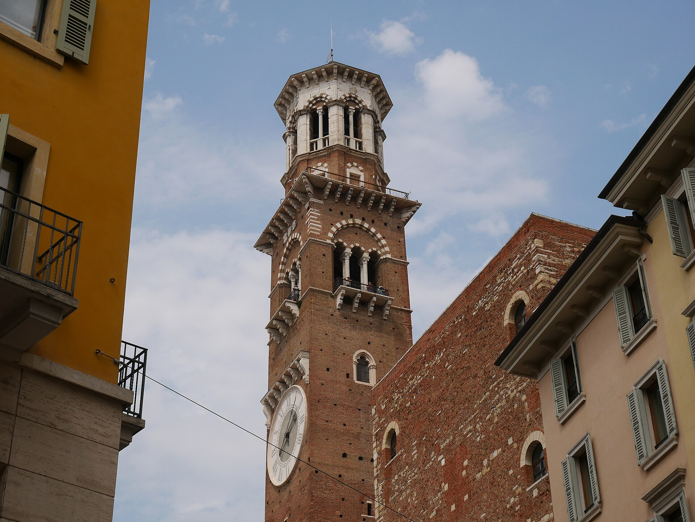
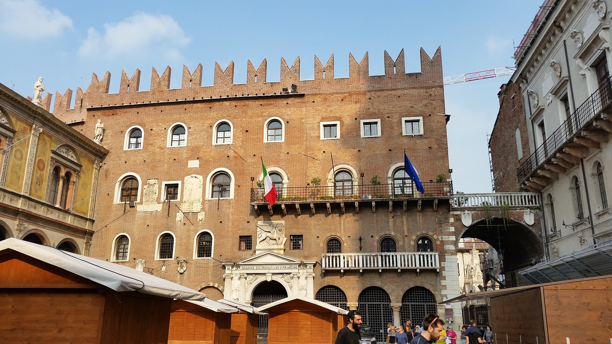

维罗纳老城的心脏，直接叠在古罗马广场（Forum Veronae）之上：场地本身有两千年连续的“市中心”履历。广场四周是中世纪塔楼、文艺复兴壁画与巴洛克立面；84 米的兰贝蒂塔可乘电梯登顶，是老城最好的俯瞰点。一旁的领主广场（Piazza dei Signori）立着但丁像。
看点路线
Il Percorso
- 1广场中轴看两侧：一侧中世纪塔楼群、一侧巴洛克 Maffei 宫--一个广场装下五个世纪
- 2看 Mazzanti 宫外墙的 15 世纪湿壁画（居然撑在露天）
- 3圣母喷泉与“Berlina”石柱：加冕与行刑共用过的位置
- 4乘电梯登兰贝蒂塔：87 米俯瞰全城 + 钟楼大钟近观
- 5穿过拱门去领主广场：但丁像与斯卡利杰罗家族的痕迹
广场看点
La Piazza · 6 个细节

罗马广场的原址
维罗纳的罗马广场就在此处：地下考古已证实层叠关系。两千年里它从政治广场变成市集广场，功能从未间断--欧洲“最长寿的市中心”之一。今天上午的果蔬摊位，与罗马时代的摊位踩着同一块地。

兰贝蒂塔
84.4 米的中世纪塔楼：下半部罗马式石砌（12 世纪）、上半部砖砌（15 世纪加高）。塔上的 Rengo 钟曾召集议会、Maragona 钟报火警--中世纪城市的“广播系统”。电梯登顶是俯瞰老城的最佳点。
Mazzanti 宫外墙壁画
广场东侧一整面的湿壁画露天挂着五百年：描绘维罗纳的纹章与寓意场景。中世纪与文艺复兴的城市喜欢把“外立面当画布”--维罗纳保存得最好的一例。
圣母喷泉
喷泉中央的圣母像是罗马时代的雕像（公元 380 年左右）--中世纪人给它接上喷泉继续用。这位“维罗纳圣母”是这个城市最年长的居民。
Berlina 石柱
广场上的四柱大理石凉亭：新任行政官在此宣誓就职，罪犯也在此示众--权力的高光与低点共用同一个亭子。中世纪城市的政治剧场中心。

领主广场与但丁
穿过拱门即是“领主广场”：斯卡利杰罗家族的权力中心。中央的但丁像纪念他 1303-1318 年间的维罗纳流亡--《神曲·天堂篇》里的天堂图景，据信受了坎格兰德的赞助与这座城市的影响。
历史故事
Le Storie
壹罗马广场的原址
香草广场直接叠在古罗马的 Forum Veronae 之上--考古发掘已证实地下层叠关系。罗马时代的政治广场变成了中世纪的市集广场：功能变了，但"中心"的地位两千年没变。
上午的果蔬摊位（今天卖纪念品与香料更多）与罗马时代的商贩踩的是同一块地。欧洲最长寿命的"市中心"之一。
贰兰贝蒂塔的三百年
塔楼 1172 年由 Lamberti 家族始建，只剩石头底层；15 世纪（1463-1464）加高砖砌部分至 84 米。一座塔楼里装了三个世纪的建造史。
塔上的两口钟各有名字与职能：Rengo 钟召集议会与民兵，Maragona 钟报火警与报时。中世纪城市的"广播系统"就在这几十米高处。
叁Mazzanti 宫的壁画
广场东侧 Mazzanti 宫的整面外墙是 16 世纪初的湿壁画（描绘维罗纳的纹章与寓意场景），露天挂了五百年仍可辨认。
文艺复兴的维罗纳贵族流行把外立面当画布：整座城市曾是一座"壁画城"。香草广场的这一面是保存最好的样本--壁画颜料居然经住了五世纪的雨雪。
肆圣母喷泉的罗马雕像
喷泉中央的圣母像（Madonna Verona）是一座罗马时代的雕像（约公元 380 年），1368 年被接上喷泉继续使用。
一个罗马雕像在中世纪被"转岗"为城市圣母--古与今的连续性，在这个广场上是具体到每一块石头上的。摸一摸喷泉边缘：那些凹槽是几个世纪打水的人磨出来的。
伍Berlina：就职与示众
广场上的四柱大理石凉亭叫 Berlina：新任行政官在此宣誓就职，罪犯也在此示众受刑。权力的高光与低点共用同一个亭子。
这种"一物两用"在中世纪城市广场很常见：仪式空间没有"专职"，一切空间都是权力的剧场。
陆但丁的维罗纳
领主广场中央立着但丁像：1303-1318 年间，被佛罗伦萨流放的但丁在维罗纳的斯卡利杰罗宫廷客居十余年。
《神曲·天堂篇》的部分章节写于此地。他的赞助人 Cangrande I della Scala 被他写入天堂篇（第十四歌预言般的暗示）。一座城市收留了一位诗人，诗人把这座城市写进了永恒。
今天的领主广场仍是维罗纳最安静的一角：但丁像脚下几个石凳，读书的年轻人与鸽子共享午后。
柒Maffei 宫的巴洛克
广场北侧的 Maffei 宫（1668）是巴洛克立面--与周围的中世纪塔楼形成"最萌代差"。顶部的五个神像（朱诺、朱庇特、维纳斯等）是反宗教改革时期对古代的公开致敬。
广场五百年里不断"长出"新立面：哥特、文艺复兴、巴洛克并存一框。走在广场里走一圈，你把五个世纪的建筑史看了一遍。
捌"Erbe"是什么菜
Piazza delle Erbe 直译"香草广场"--中世纪的市集以蔬菜、香料与草药为主。维罗纳地处南北商路要冲，香料的摊位曾是城市财富的展示窗口。
今天的市集上午开到 13:00 左右：本地人买果蔬与奶酪，游客买纪念品与香料--同样的广场，同样的人声鼎沸。
玖香草广场 vs 领主广场
维罗纳老城有一对广场：香草广场（Piazza delle Erbe）是"市民与市场"，领主广场（Piazza dei Signori）是"权力与行政"--两广场之间由拱门相连。
这种"市场+权力"的并置是意大利中世纪城市的经典布局：佛罗伦萨与博洛尼亚也有类似结构。维罗纳的版本最紧凑：从市集到议会的步行距离只有二十步。
拾登塔的最佳时刻
兰贝蒂塔的电梯票含登顶平台。本地摄影师的共识：日落前半小时登塔--夕阳把老城的赤砖屋顶与阿迪杰河镀金，远处竞技场的外墙清晰可见。
塔顶的风声与钟声构成了一种"中世纪的立体声"。如果歌剧季的傍晚，还能听到竞技场方向传来的排练声。
参观贴士
Consigli Pratici
- 上午 10 点前广场摊位正在摆：想拍“无人空景”要更早；想逛市集则 10 点后
- 兰贝蒂塔电梯票与 Verona Card 联动；塔顶风大，傍晚日落前一小时最佳
- 广场餐厅价格全城最高档；本地人的 aperitivo 在旁边的 Via Pellicciai 小巷
- 领主广场拱门里的书店与 Palazzo della Ragione 画廊免费，值得一转
- 但丁像与朱丽叶之家步行 3 分钟，可串成“文学维罗纳”动线
顺路同游
Da Non Perdere